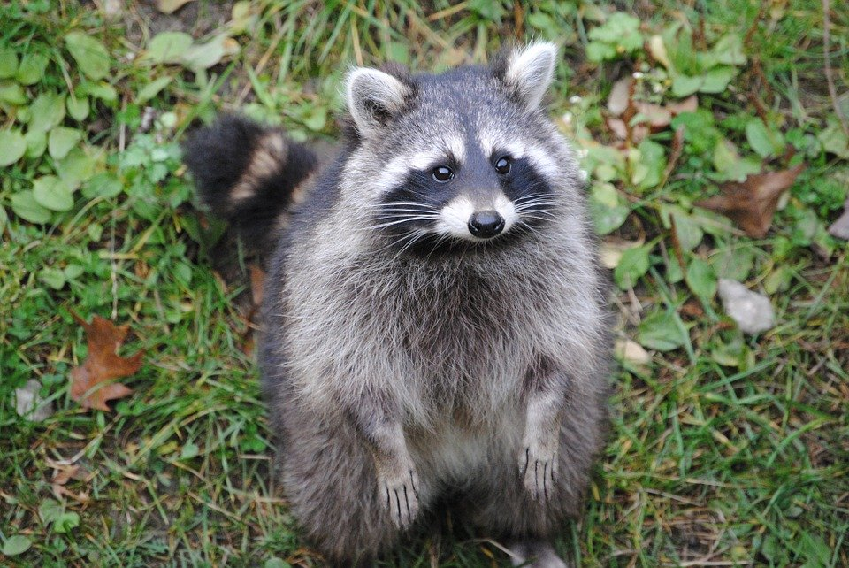
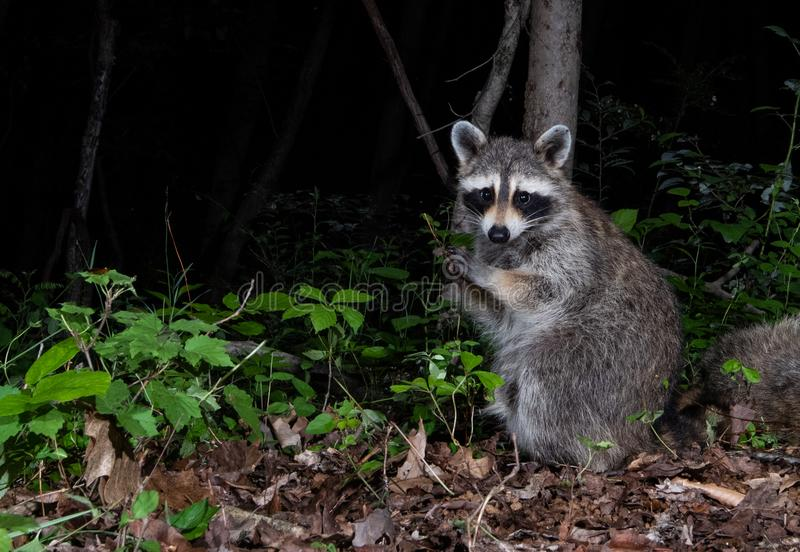
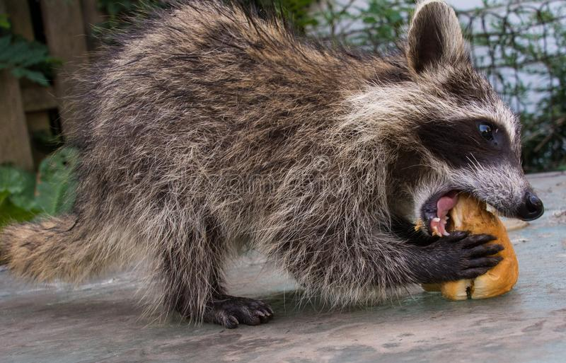
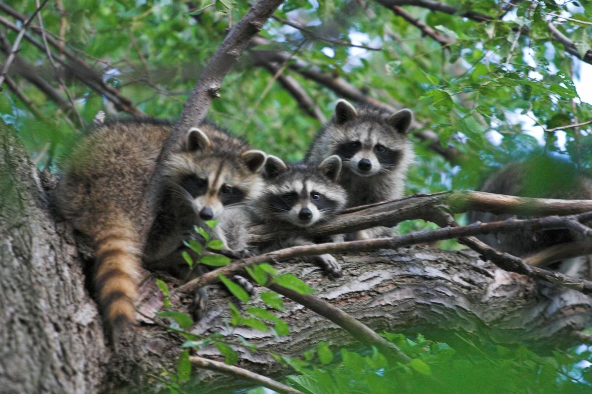
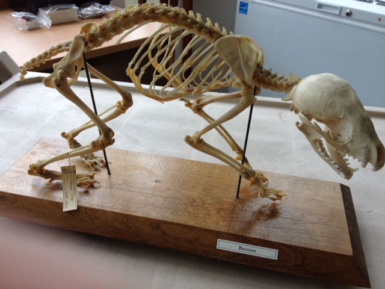

Raccoons are small mammals that are native to North America. Raccoons and aren't too hard to spot in many North American cities as well as forests and due to their ability to adapt, can live almost anywhere. Here is some more facts about the sneaky creature:

public domain
Raccoons grow to be 23-37 inches and weigh 4-23 lbs. Raccoons are often compared to be the size of small dogs and due to their small stature, they are able to climb with ease as well as hide.

public domain
Raccooons are nocturnal, they hunt and are usually awake at night but can also hunt during the day.

public domain
Raccoons are omnivores, they eat both plants and animals. Being an extremely adaptive animal, raccoons can eat many foods often including: eggs, fruit, and small mammals.

public domain
A group of raccoons is called a nursery. Although not very common, raccoons can stay an hunt together although they are usually solitary animals.

public domain
Racooons only live up to 2-3 years in the wild; however, in captivity can live up to 20 years. This may be due to the rough conditions the wild contains, such as predators, lack of resources, disease, parasites, etc.
To conclude:
Raccoons may not be people's favorite animal; however, they are interesting and a good animal to learn about due to the large amount of them. They are not going to go anywhere soon as they are not in danger of being extinct. While raccoons have adapted to urban human populated areas, humans may also have to adapt to raccoons in the same area as well.